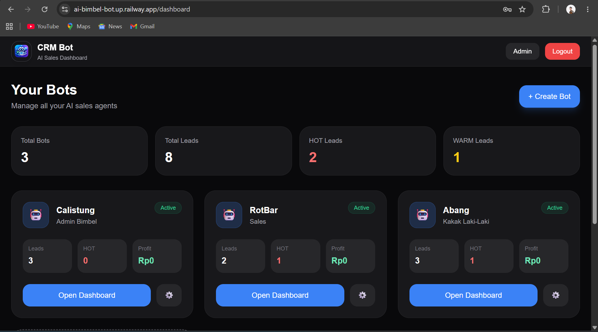
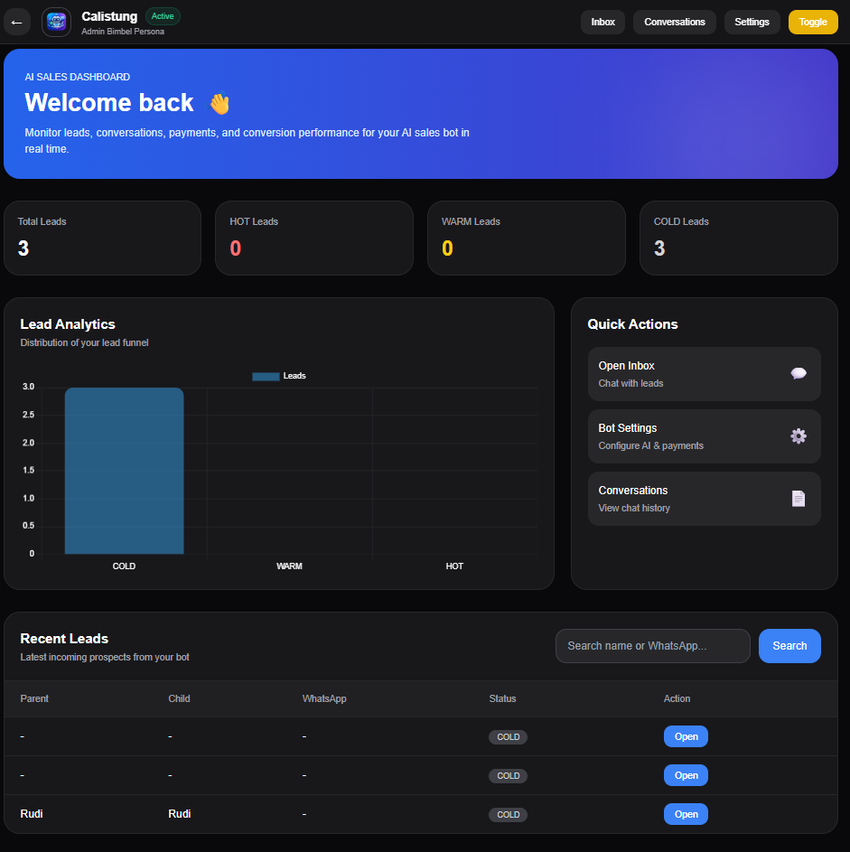

AI & AUTOMATION CASE STUDY
🤖 AI CRM Bot
AI customer service solution yang menggabungkan conversational AI, lead management, conversation history, dan admin dashboard.
01. The Problem
Customer service membutuhkan respons yang konsisten sekaligus cara yang lebih terstruktur untuk menyimpan percakapan, memonitor leads, dan melakukan follow-up.
02. The Solution
🤖 AI Customer ServiceMenjawab pertanyaan pelanggan dengan konteks bisnis.
🔥 Lead ManagementMengelompokkan lead menjadi HOT, WARM, dan COLD.
💬 Conversation HistoryMenyimpan interaksi untuk membantu monitoring dan follow-up.
📊 Admin DashboardMenyediakan tampilan untuk mengelola data dan status bot.
03. Project Preview



04. What This Project Shows
Project ini menunjukkan bagaimana AI dapat dihubungkan dengan kebutuhan operasional bisnis, bukan hanya sebagai chatbot tetapi sebagai bagian dari workflow customer service, lead management, dan monitoring.